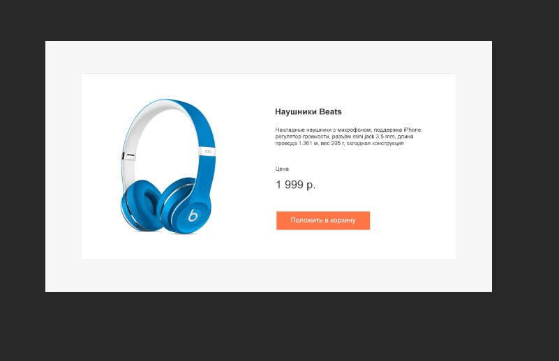

Сверстайте карточку товара, используя строчно-блочную верстку
1) Сама карточка (прямоугольник с белым фоном) должна находиться строго по центру страницы по горизонтали
и по вертикали независимо от размера экрана
2) Не нужно растягивать весь блок на всю ширину страницы
3) При уменьшении размера экрана блок так же меняет свой размер
<